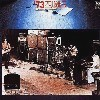
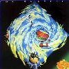
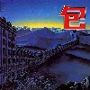

strange music page
japanese strange music * * * 70's progressive
#日本の70年代モノです。"strange music"って言ってしまうと無理がありますけど、最近売れてるポップスなんかを考えると、どのバンドもとても面白いです。
日本にロックミュージックってのが入ってきた頃で、試行錯誤の繰り返しの時代だと。定形の無い所から何か作りだそうとしている意欲が最近の音楽との違いかなと思います。何よりも魅力的な時代の雰囲気がたまらないです。
あ、ここには書かないですけど、はっぴぃえんども大好きです。当然。
|
- カルメンマキ & OZ
- コスモスファクトリー
- APRYLFOOL
- 遠藤賢司
- スピード・グルー&シンキ
- 四人囃子
- v.a.
|
#はっぴぃえんどの前、細野晴臣と松本隆がいたグループのアルバム。1969当時の流行のスタイルが色々入ってます。
柳田ヒロの曲だけプログレ/アヴァンギャルドだし、思いっきりブルースな曲が有ったりとか....物凄くアルバムとしてはちぐはぐな感じ。
アルバム出してすぐ解散して、松本/細野ははっぴぃえんどへ。
- Tomorrow's Child
- Another Time
- 人間神話の崩壊
- 組曲:母なる大地 I
- Tanger
- Pledging My Time
- 暗い日曜日
- 聡明な死が示す怪奇な魅惑的な趣味の象徴
- 組曲:母なる大地 II
- 柳田ヒロ (keyboards)
- 菊地英二 (guitars)
- 小坂忠 (vocals)
- 松本隆 (drums)
- 細野晴臣 (bass)
NIPPON COLOMBIA: COCA-12154 (original release 1969)
#マキオズの1枚目です、日本のロック云々とか言う本見ると必ず載ってます。
やっぱり時代の力を感じますねー、ジャニスだとかハードロックの草分けとか、そんな事よりこの時代でなければ出てこなかった音だと思います。
俺も20年くらい早く生まれて、こんな時代に生きてみたかったとか思いますね、きっと「マキー」とか叫んでたのかも。
- 六月の詩
- 朝の風景
- Image Song
- 午前１時のスケッチ
- きのう酒場で見た女
- 私は風
- カルメンマキ (vocals)
- 春日博文 (guitars)
- 千代谷晃 (bass)
- 石川清澄 (piano)(hammond organ on 1.2.6.)
- 古田宣司 (drums,percussions)
- 深町純 (piano on 4.5.)(hammond organ on 2.3.4.6.)(mellotron on 1.)(synthesizers on 1.3.6.)(clarinet on 1.)
- 安田裕美 (acoustic guitar on 2.3.6.)
- 鳴瀬喜博 (bass on 4.)
- 西哲 (drums on 4.)
- INTRODUCTION
- 崩壊の前日
- 火の鳥
- LOST LOVE
- 閉ざれた町
- EPILOGUE
- カルメンマキ (vocals,bakcing vocals)
- 春日博文 (guitars,mandoline,bakcing vocals)
- 川上茂幸 (bass,backing vocals)
- 川崎雅文 (piano,organ,mellotron,synthesizers)
- 工藤賀一 (drums,percussions)
KITTY RECORDS: KTCR-1518 (original release 1976)
#スタジオ盤としてはラスト作です。長めの曲が増えたような感じもします。ますますジャニスっぽくなってます、やっぱり格好良いです。
- 南海航路
- Love Songを唄う前に
- とりあえず...
- 26の時
- 空へ
- 街角
- 昔
- Age
- カルメンマキ (vocals,backing vocals)
- 春日博文 (guitars,mandoline,tublar bells,backing vocals)
- 川上茂幸 (bass,backing vocals)
- 川崎雅文 (piano,organ,synthesizers,mellotron,accordion)
- 武田治 (drums,percussions,backing vocals)
#マキオズのラストライヴです、アツイです、盛り上がってます。勢いが有って格好良いです、スタジオの10倍くらいうるさい川上シゲのベースとかもすごいです。
DISC-1
- 君が代
- 午前1時のスケッチ
- シゲのソロ
- 崩壊の前日
- 六月の詩
- Image Song
- とりあえず (Rock'n Roll)
DISC-2
- あどりぶ
- 閉ざされた町
- 26の時
- 空へ
- 私は風
- カルメンマキ (vocals)
- 春日博文 (guitars)
- 武田治 (drums)
- 川上シゲ (bass)
- 川崎雅文 (keyboards)
#1973年のコスモスファクトリーの1枚目です、ムーグやメロトロンの音が古めかしいです。サイケでプログレで70年代らしい名盤だと思います。
- Soundtrack 1984
- 神話 (Maybe)
- めざめ (Soft Focus)
- 追憶のファンタジー (Fantastic Mirror)
- ポルタガイスト
- トランシルヴァニアの古城
- 死者の叫ぶ森 (Forest of The Death)
- 呪われた人々 (The Cursed)
- トランシルヴァニアの古城 (An Old Castle of Transylvania)
- 泉つとむ (keyboards,vocals)
- 滝としかず (bass,vocals)
- 水谷ひさし (guitars,vocals)
- 岡本和夫 (drums)
#高橋正明(喜太郎)さんが在籍していたバンド。ピンクフロイドと邦楽を無理に掛け合わせた感じに聞こえました。宮下文夫さんがイニシアチブをとっているのかな。深草アキさんとか伊東祥さんとか現在と活動してる方もいます。
音的には....「ちょっと無理だろー」とか思っちゃいました、当時はウケたのかもしれないですけど、ちょっとマトモに聴くには恥ずかしい音です、妙に邦楽を意識したボーカルとか特に。
- 未知の大陸
- 時代から
- 水神
- 心山河
- 風神
- 煙神国
- 和・倭
- 北の彼方の神秘
- 喜怒哀楽
- 地球空洞説
- 蘇生
- 宮下文夫 (vocals,guitars)
- 伊東祥 (keyboards,synthesizers)
- 高橋正明 (synthesizers)
- 深草彰 (bass)
- 福島博人 (guitars)
- 高崎静夫 (drums,percussions)
- 夜汽車のブルース
- ほんとだよ
- ただそれだけ
- 君がほしい
- 雨あがりのビル街 (僕は待ちすぎてとても疲れてしまった)
- 君のことすきだよ
- 猫が眠っている、NIYAGO
- 遠藤賢司 (guitars,harmonica,voclas)
- 鈴木茂 (guitars on 1.5.)(bass on 4.)
- 細野晴臣 (bass on 1.5.)(guitars on 4.)(piano on 1.)
- 深澤由利子 (violin on 2.)
- 鈴木玲 (cello on 2.)
- 松本隆 (drums on 1.4.5.)
東芝EMI: TOCT-8948 (original release 1970 - URC RECORDS)
- 東京退屈男
- 東京ワッショイ
- 天国への音楽
- 哀愁の東京タワー
- 続東京ワッショイ
- 不滅の男
- ほんとだよ
- 輪廻
- UFO
- とどかぬ想い
- 遠藤賢司 (vocals,guitars)(electric piano on 7.9.)
- 佐久間正英 (bass,synthesizers)
- 岡井大二 (drums)
- 佐藤満 (guitars on 2.6.)
- 山内テツ (bass on 2.)
- 山畑松枝 (harp on 9.)
- 佐藤佐智子 (笑い声 on 7.)
- 矢田部純 (かけ声 on 1.)(chorus simulation on 8.)
KING RECORDS/BELLWOOD: KICS-2145 (original release 1978)
- Sniffin' & Snortin' Op.1 (鼻歌 Op.1)
- Run And Hide
- Bad Woman (悪い女)
- Red Doll (赤い人形)
- Flat Fret Swing
- Sniffin' & Snortin' Op.2 (鼻歌 Op.2)
- Don't Say No
- Calm Down
- Doodle Song
- Seach For Love
- Chuppy
-
- Sun
- Planets
- Life
- Moon
- Song For An Angel (天使へ捧げる歌)
- 加部正義 (bass)
- 陳信輝 (guitars)
- Joey Smith (vocals,drums,moog synthesizer)
- Michael Hanopol (bass,vocals,keybaords)
- 小口ひろし (drums)
- 渡辺茂樹 (keyboards)
WARNER MUSIC JAPAN: WPC6-8453/8454 (original release 1972)
#
フジロックで実物を見たらあまりにカッコ良かったんで、聴きなおして見ることにしました。
「空飛ぶ円盤に〜」のイントロとかちょっとゾクゾクするものが有ります、このライヴは1973年なので20年前くらいかな？
今まで認識誤ってました、ライヴの方が数十倍カッコイイみたいです、このバンド。
「中村君の作った曲」ってのは変なロケンロールで、どーかと思いましたけど。他の曲はイイです、なんつーか圧倒される感じです、最近のバンドとかでは絶対に感じないような気合。絶対スタジオ盤よりもこっち、TIME VAULTSも買おうかな？(2002.8.7)

- おまつり
- 空飛ぶ円盤に弟が乗ったよ
- 中村君の作った曲
- 一触即発
- 岡井大二 (drums)
- 坂下秀実 (keyboards)
- 森園勝敏 (guitars,vocals)
- 中村真一 (bass)
PONY CANYON: PCCA-00587
#アルバム"一触即発"にシングル"空飛ぶ円盤に弟が乗ったよ"を加えたQ盤です。やっぱり四人囃子といえばこのシングル曲です、結構最近色々なひとがカバーしてます)もうアホみたいなシュールな歌詞です「空飛ぶ円盤に〜♪」
ちなみにアルバムの音はまんまピンクフロイドです。ただやっぱり単なる模造ではなくて、四人囃子ならでわの違った魅力も引き出してます、曲の構成力とか最近のバンドとか及びもつかないんじゃないんでしょうか。「一触即発」のサビの前の緊張感とか本当にゾクゾクするものがあります。
- [hamaebeθ]
- 空と雲
- おまつり(やっぱりおまつりのある街へ行ったら泣いてしまった)
- 一触即発
- ピンポン玉の嘆き
- 空飛ぶ円盤に弟が乗ったよ
- ブエンディア
- 森園勝敏 (guitars,vocals)
- 坂下秀実 (piano,organ,mellotron,moog)
- 中村真一 (bass,backing vocals)
- 岡井大二 (drums)
- 茂木裕多加 (keyboards on 7.8.)
PONY CANYON: PCCA-00586 (original release 1974)

- フライング
- カーニバルがやってくるぞ(パリ野郎ジャマイカへ飛ぶ)
なすのちゃわんやき
- 空と海の間
- 泳ぐなネッシー
- レディー・ヴァイオレッタ
- 森園勝敏 (guitars,vocals)
- 佐久間正英 (bass,recorder,synthesizers)
- 坂下秀実 (keyboards,synthesizers)
- 岡井大二 (drums)
CBS/SONY RECORDS: CSCL-1245 (original release 1976)

- 眠たそうな朝には
- 君はeasy
- スイート・ラバーソング
- ビギニング
- モンゴロイド・トレック
- 機械じかけのラム
- モロッカン・ダミーズ
- ファランドールみたいに
- Crystal Bomb
- Vuoren Huippu
- 森園勝敏 (guitars,vocals)
- 岡井大二 (drums)
- 中村真一 (bass)
- 坂下秀美 (keybords)
PONY CANYON: D25P-2687 (1978.7)
- FLOWER TRAVELLIN' BAND/MAP
- FLOWER TRAVELLIN' BAND/SATORI PART II
- FLOWER TRAVELLIN' BAND/MAKE UP
- FLOWER TRAVELLIN' BAND/天国地獄
- FUNNY COMPANY/午後一時ちょっとすぎ
- FUNNY COMPANY/一人ぼっち
- 柳田ヒロ/真夜中の殺人劇
- Allan Merrill/太陽と雨
- ROCK PILOT/ブルージーン・ブルース
- JUSTIN HEATHCLIFF/LIFE
- SPEED GLUE and SHINKI/ODE TO THE BAD PEOPLE
- SPEED GLUE and SHINKI/RUN AND HIDE
- FAR OUT/Shu Shu
WARNER MUSIC JAPAN: WPC6-8424 (1998)